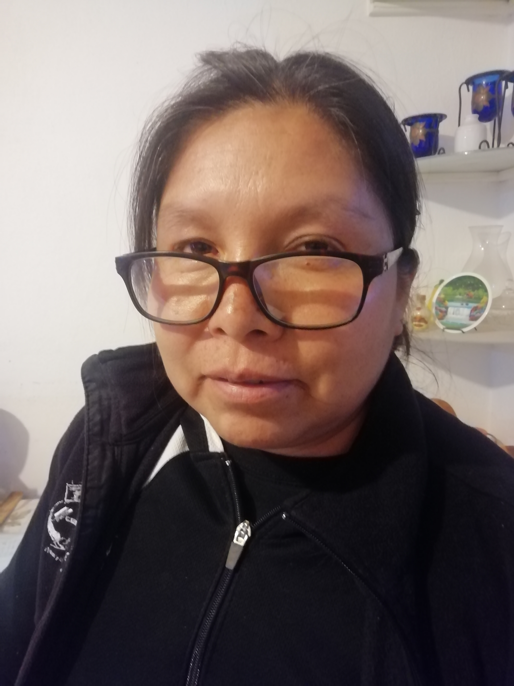
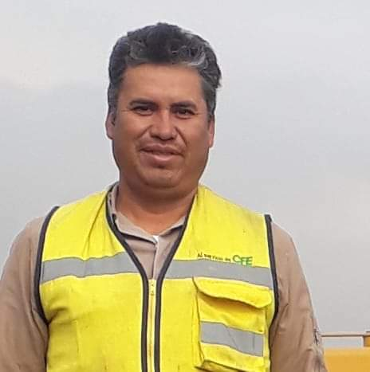
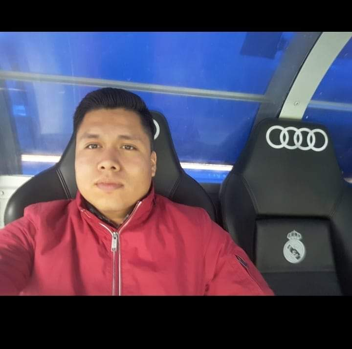
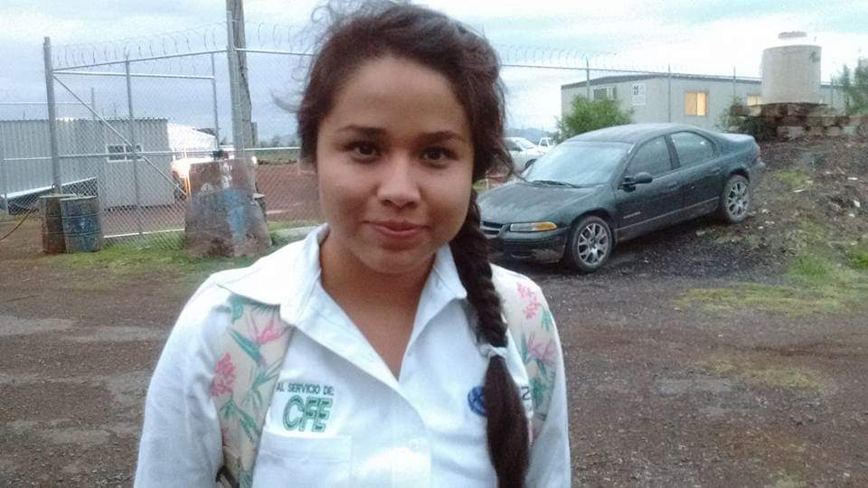
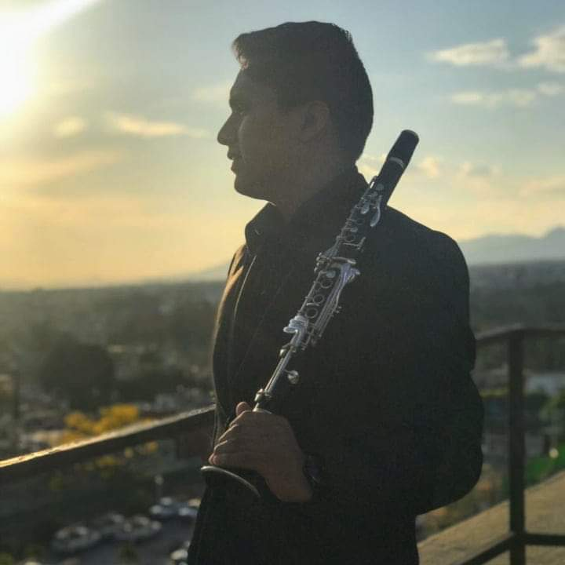
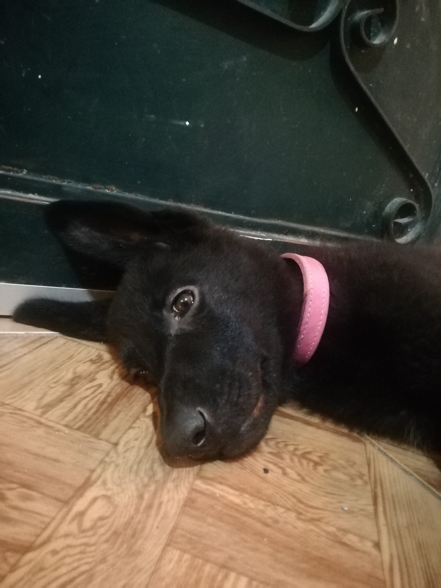

Mi familia
Las imagenes los lleva al perfil de cada uno para mas informacion de ellos:)
Mi mamá
Ella es mi mama, se llama veronica, tiene 46 años, ella es la que siempre esta en todo, me apoya en todo lo que quiera hacer y me corrige en las cosas que este mal, la quiero mucho, es la que siempre cree en mi y me ha dado todo a pesar de a veces ella no tener nada, la amo mucho.

Mi papa
El es mi papá, se llama Constantino y tiene 48 años, tal vez no sea el papa más cariñoso, pero gracias a el nunca me ha faltado nada, siempre trabaja para que nunca nos falte de que comer o cualquier otra cosa, yo lo quiero mucho, le agradezco mucho lo que me ha dado y gracias a el he podidio hacer todo y llegar a donde ahora.
 Lo quiero mucho
Mi hermano
El es mi hermano mayor, se llama Ivan, y pues lo admiro mucho, ha llegado a hacer cosas muy grandes, es ingenirero aeronautico y realmente es muy bueno en lo que hace, siempre me dice que me quiere mucho, es muy buena persona, es un ejemplo a seguir en muchos aspectos.

Mi hermana
Ella es mi hermana y la unica hermana, se llama lizbeth, a ella tambien la admiro mucho, es la que siempre me apoya cuando tengo algun problema o no le entiendo a algo de la escuela, me ayuda mucho en muchas cosas, aunque es regañona y siempre me esta mandando a hacer cosas la quiero mucho,

Mi hermano
El es mi ultimo hermano, se llama Ricardo, esta estudiando musica, es muy buena persona, lo quiero mucho, es con el que más he compartido, siempre le gusta ayudar a la gente y es muy paciente conmigo.

Nuestra perrita
Ella es la ultima integrante de la familia, no tiene mucho tiempo, tiene apenas unos 2 meses, se llama Lina, es una perra pastor Aleman, es muy cariñosa y juguetona, todos la queremos mucho, y espero que se quede con nosotros mucho tiempo más, me he divetido mucho jugando con ella

Video